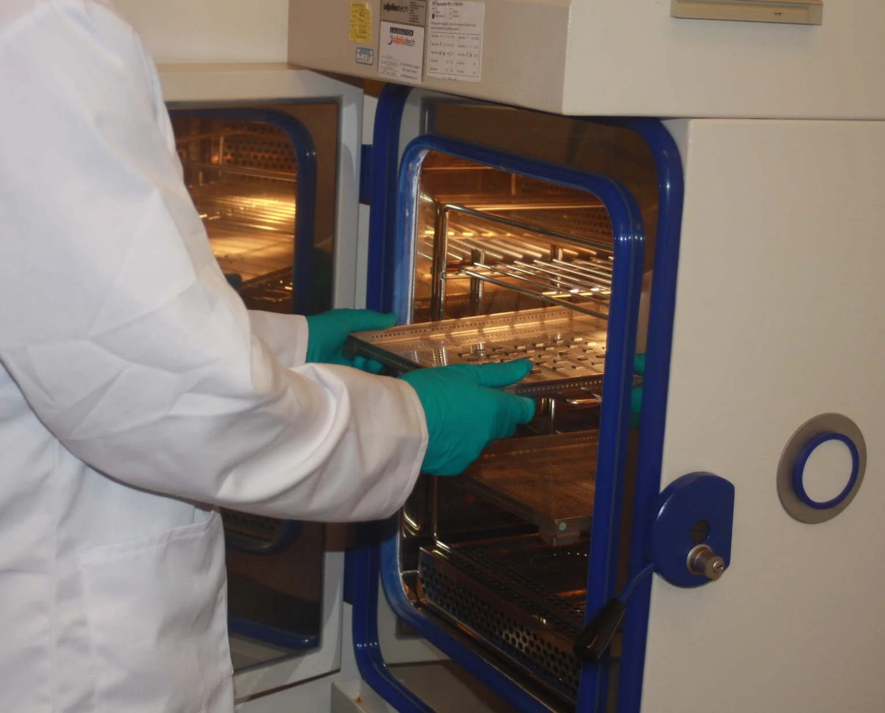
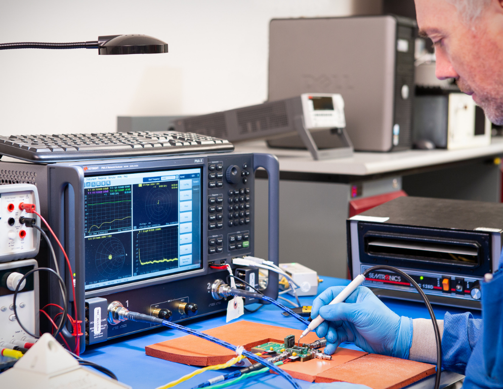
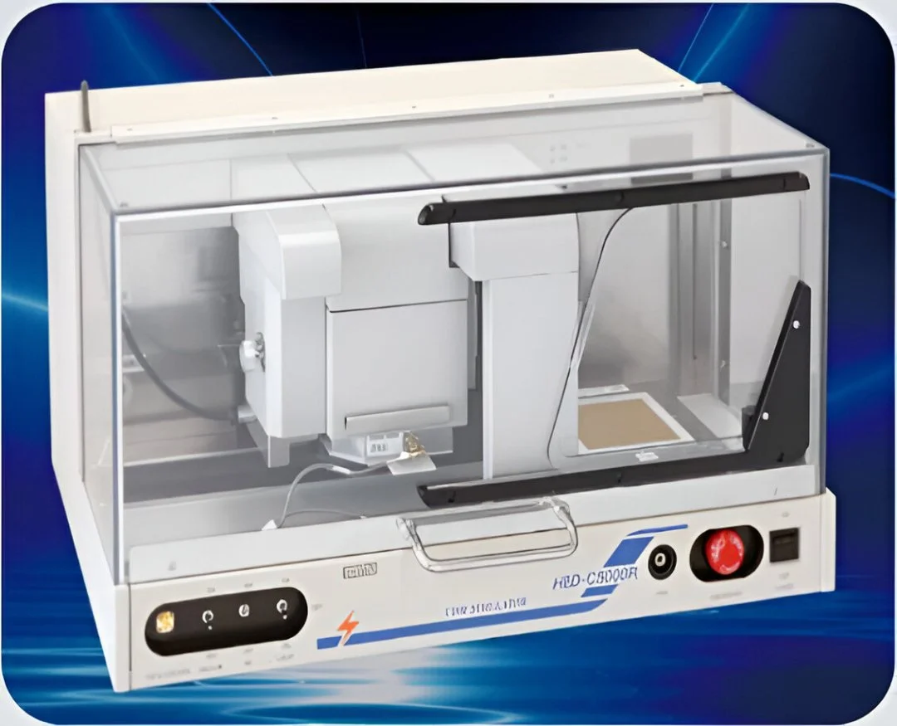

Precision-driven reliability testing and failure analysis for the semiconductor industry — from automotive-grade ICs to cutting-edge RF components. We compress years of field exposure into hours of controlled, accredited testing.



At our laboratory, innovation is not just a goal — it's the foundation of everything we do. With over three decades of experience in the semiconductor industry, we transform every technological challenge into a measurable opportunity to move forward.
Our mission is to deliver reliable, efficient, and precise qualification data that empowers engineers to make informed decisions — faster. We operate where physics meets production, bridging the gap between design intent and real-world device behavior.
Each project represents another step toward a future where technology and precision converge. As device geometries shrink and performance demands escalate, our testing infrastructure evolves with them — ensuring your products meet tomorrow's standards today.
Every test performed with ISO-grade accuracy